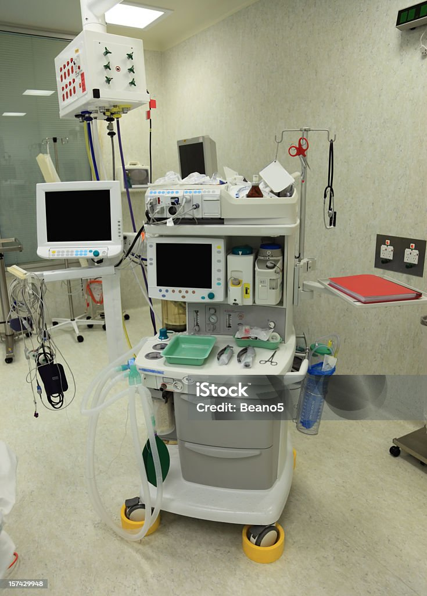
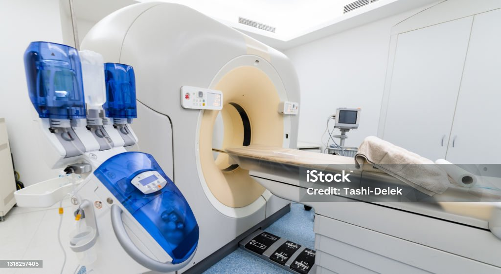
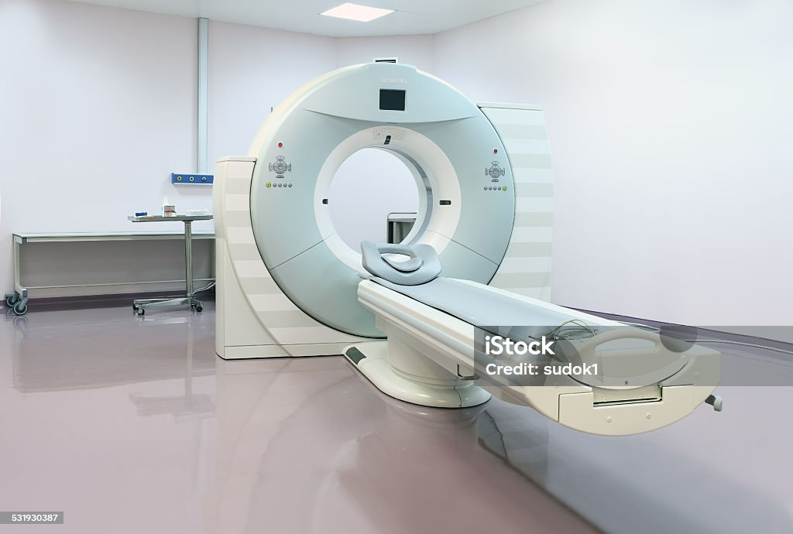

It is a medical device used to deliver a controlled mixture of anaesthetic gases and oxygen to a patient during a surgical or medical procedure to induce and maintain anaesthesia.
It is an X-ray imaging method used to detect breast cancer and other breast diseases. It involves pressing the breast between two plates to flatten and spread the tissue for imaging.
It is a mobile X-ray device also known as flovouscopy machine used in surgical and orthopedic procedures which allows surgeons to visualize untend structure and motion procedures in real-time.
They are devices that apply an electronic charge or current to the heart to restore a normal heartbeat.
It is a medical imaging device that X-rays and computer technology to create detailed cross sectional images of the body. /* include video on how to use it */
It is a non-invasive that uses radio waves and magnets to create detailed images of the body's internal structures.
It is a non-invasive imaging technique that uses high frequency sound waves to create real-time images of internal organs and soft tissues( it operates without exposure to radiation)